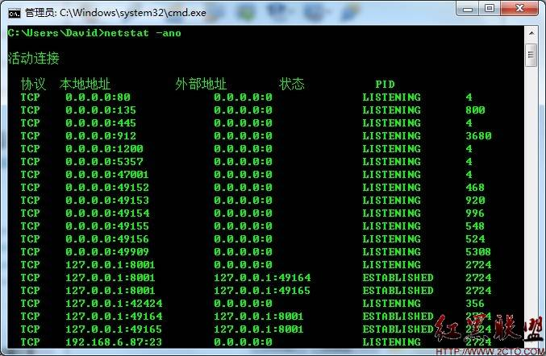
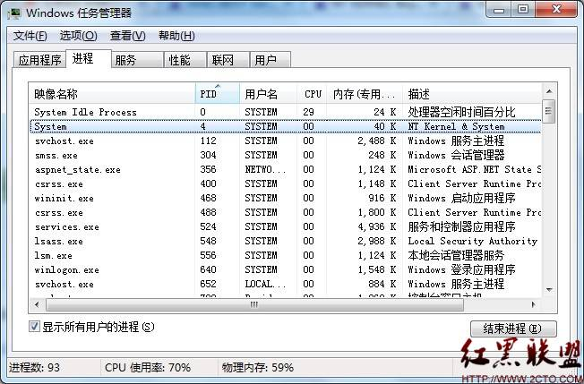
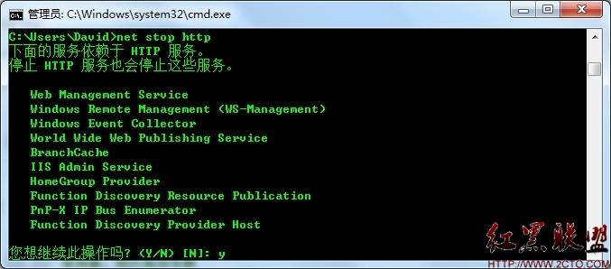
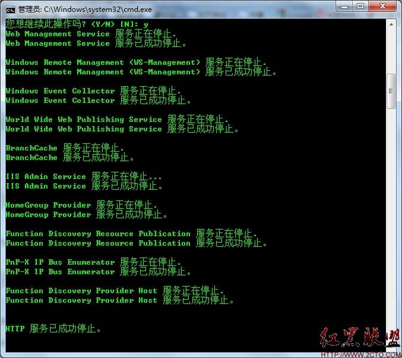
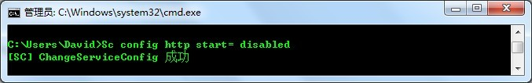
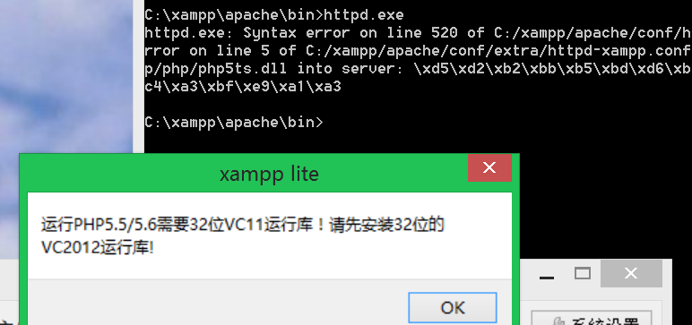

80端口被NT kernel & System 占用pid 4
转载自 http://www.2cto.com/os/201111/111269.html 前段时间停止了Apache，结果在打开的时候发现无法打开，80端口被占用，于是win+r 运行cmd 输入 netstat -ano
可以看到80端口被PID4占用，于是打开任务管理器-进程-查看，选择列，勾选PID 可以看到pid 4 的被NT kernel & System 占用
在网上找了很久找到解决方案 http://www.cameroncooke.com/2009/01/25/windows-7-uses-port-80-and-makes-it-impossible-to-install-apache-solution/comment-page-1/#comments 翻译如下： 该进程是Http.sys。它是http API的驱动组件，Http栈服务器。如果该端口被Http.sys占用，说明一些正在使用http.sys的应用程序在运行。这就是阻止Apache运行的原因，因为Http.sys占用着80端口。我们提供了一种应用程序的机制来帮助控制端口共享，但是我需要调查导致你遇到这种困难的是什么特殊应用程序。如果你能提供给我们“netsh http show servicestate”这条命令的输出结果，我就能找出是哪个应用程序在使用Http.sys。在你禁用Http.sys之前，请按照下面的步骤来运行命令： 1. sc config http stat = demand 2. reboot 3. run the command(netsh http show servicestat)as administrator 在你使用这个命令之前，你可以按照下面步骤禁用http.sys：- net stop http
- Sc config http start= disabled

按 y 确定
再运行 Sc config http start= disabled
好了，现在启动Apache，可以启动了。 在查看一下netstat -ano 发现pid 4占用了445端口 后续： 后来换了个环境运行报错，可能是端口被占用。 查看发现没有占用端口，更换端口监听也是同样错误。 日志文件空空如也。网上查到一个偏方，用cmd运行apache， 果然出现报错信息，跟php有关。切换php版本发现了问题所在：